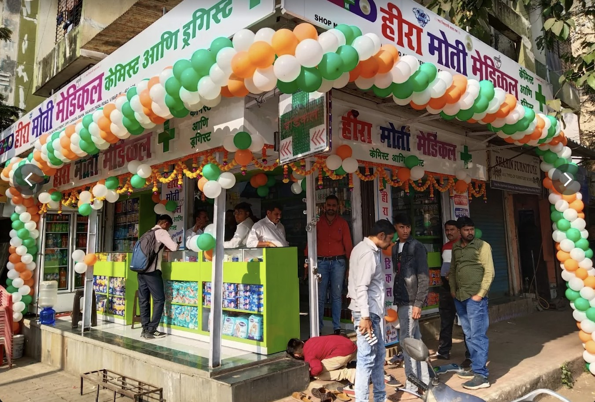
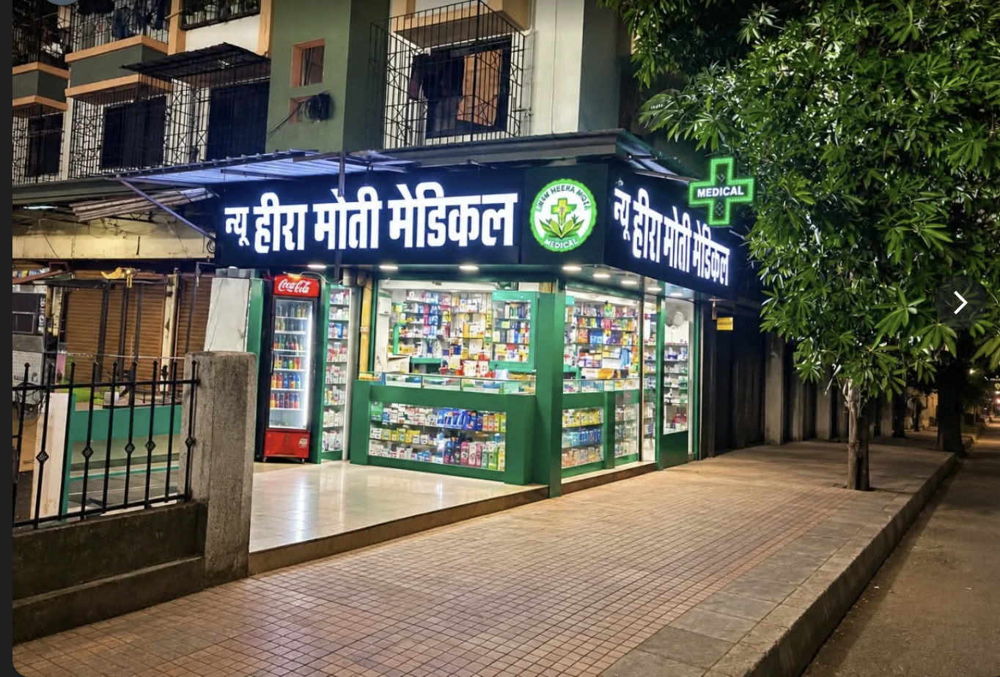

BRANCH 01Heera Moti Medical
Shop No. 06, Kashinath Govind Apt, Manvelpada Road, Vasai, Virar East, Vasai-Virar, Maharashtra 401305
093023 17461
Daily, 8:00 AM – 12:30 AM*
Have a question about medicine availability or a general product enquiry? Choose a branch below to call or start a WhatsApp conversation directly with the store.

BRANCH 01Shop No. 06, Kashinath Govind Apt, Manvelpada Road, Vasai, Virar East, Vasai-Virar, Maharashtra 401305
093023 17461
Daily, 8:00 AM – 12:30 AM*

BRANCH 02Nana Nani Park, Shop No. 8, Om Himgiri Shai Shyam CHS, Opp. Bank of Baroda, Manvelpada Road, Link Road, Virar East, Maharashtra 401305
090968 87461
Daily, 8:00 AM – 12:30 AM*
*Hours are based on the supplied business profile information and may vary on holidays. Please confirm with the branch. WhatsApp is for general enquiries only, not emergencies or medical advice.